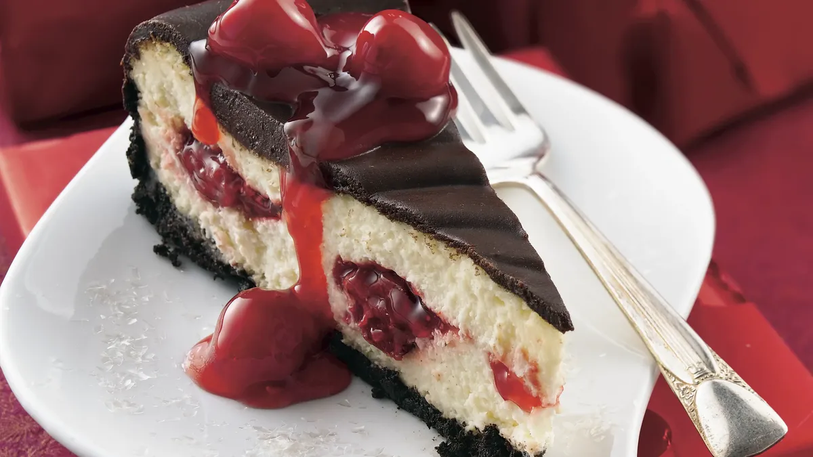
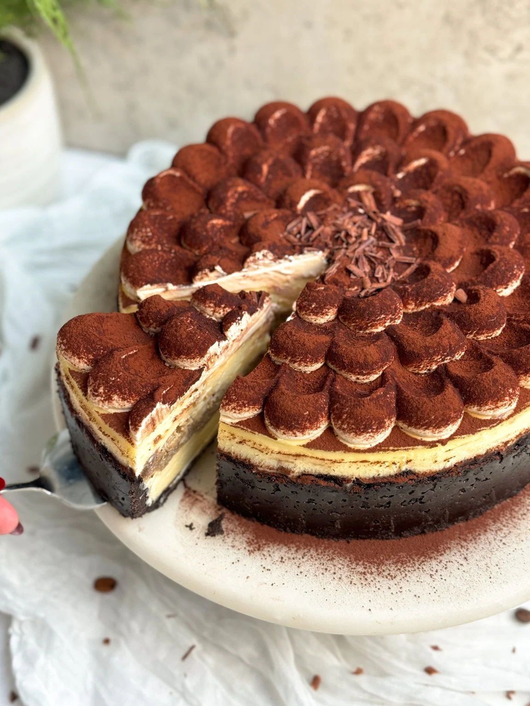
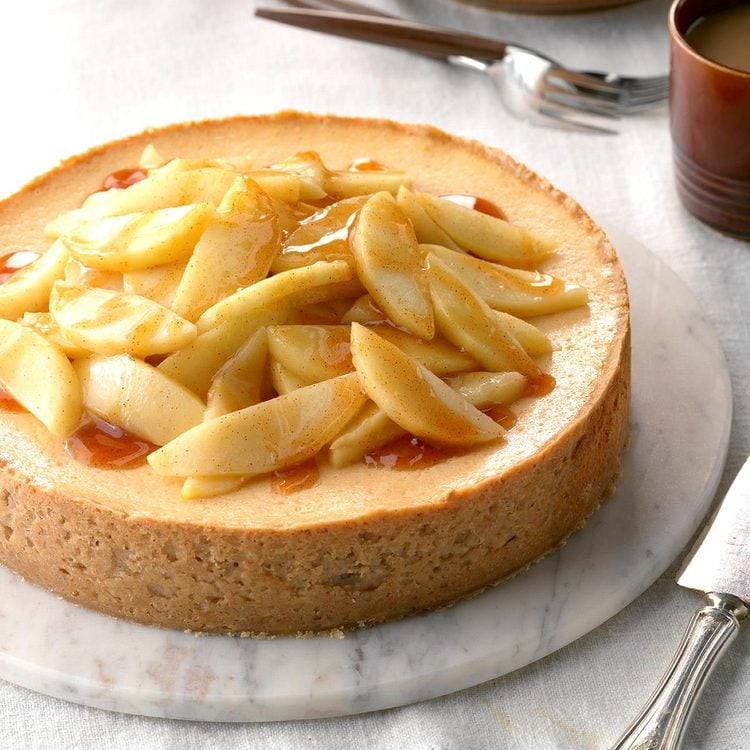

Desserts
Chocolate-Cherry Cheesecake

A rich and creamy cheesecake with a chocolate cookie crust,
filled with luscious cherry pie filling and topped with a
decadent chocolate glaze.
Prep Time:
35 minutes |
Cook Time:
5 hour 50 minutes |
Servings:
16 |
Author:
Betty Crocker
Ingredients
Crust
- 2 cups chocolate cookie crumbs
- 3 TBSP butter, melted
Filling
-
4 (8 ounce)
packages cream cheese, softened
- 3 large eggs
- 3/4 cup sugar
- 1/2 tsp almond extract
- 1/2 cup whipping cream
- 1 can 21 oz cherry pie filling
Glaze
- 1/2 cup whipping cream
- 1 cup semi-sweet chocolate chips (6 oz)
Instructions
-
Heat oven to 325°F. In medium bowl, combine crust ingredients;
mix well. Press in bottom and 1 inch up sides of ungreased
10-inch springform pan.
-
In large bowl, beat cream cheese with electric mixer on
medium speed until smooth. Add 1 egg at a time, beating well
after each addition. Beat in sugar and almond extract until
smooth. Add 1/2 cup whipping cream; blend well.
-
Spoon 3 1/2 cups cream cheese mixture into crust-lined pan,
spreading evenly. Carefully spoon 1 cup pie filling evenly
over cream cheese layer (reserve remaining pie filling for
topping). Spoon remaining cream cheese mixture evenly over
pie filling.
-
Bake 1 hour 5 minutes to 1 hour 15 minutes or until center is
set. Cool in pan on wire rack 1 hour.
-
In 1-quart saucepan, heat 1/2 cup whipping cream to boiling
over medium-high heat. Remove from heat.
Stir in chocolate chips until melted.
-
Line cookie sheet with waxed paper. Remove side of pan.
Place cheesecake on paper-lined cookie sheet.
Spread glaze over cooled cheesecake, allowing some to flow down
side. Refrigerate at least 3 hours or overnight.
Serve topped with remaining pie filling.
Back to Top
Baked Tiramisu Cheesecake

A silky, creamy and luscious cheesecake with a chocolate crust
and a layer of coffee soaked ladyfingers topped off with a
coffee mascarpone cream and cocoa powder
Prep Time:
35 minutes |
Cook Time:
24 hours with chilling time |
Servings:
14 |
Author:
Zoha
Ingredients
Chocolate Crust
- 35 chocolate creme cookies
- 5 TBSP unsalted butter, melted
Cheesecake Filling
-
3
(8 ounce)
packages cream cheese, room temperature
-
1
(8 ounce)
good quality mascarpone
(e.g., Galbani),
room temperature
-
1
1/2
Cups granulated sugar
- 1/2 tsp salt
- 1 tsp vanilla essence
- 4 large eggs, room temperature
- 1/2 cup heavy cream
- 1 cup sour cream
- 1 TBSP cornstarch
Assembly
- 12 ladyfinger biscuits
-
1/2
cup strong coffee
(make black coffee however you like, but make it stronger)
Coffee Mascarpone Topping
- 4 oz good quality mascarpone, cold
- 2-4 TBSP granulated sugar
- 1 tsp instant coffee + 1 tsp water
- 1 cup heavy whipping cream, chilled
Decoration
- 2 TBSP cocoa powder to dust
Instructions
Chocolate Crust
-
Preheat oven to 350F (conventional)
and butter the bottom of a 10" springform pan (3" tall).
-
Grind the chocolate creme cookies and melted butter in a
food processor until they form a fine crumb.
Transfer to the pan, and pack very tightly using
a measuring cup. You can push a little up the edges
but keep most on the bottom.
-
Bake for 7-8 minutes.
Cheesecake Filling
-
Adjust the oven temperature to 320F (conventional)
-
Add the cream cheese and mascarpone cheese to the bowl of your
stand mixer along with the sugar, vanilla and salt.
Use the paddle attachment to beat for 2-3 minutes on
medium-low speed until creamy. Keep scraping the sides of the
bowl to ensure everything combines evenly.
-
Break your eggs in a separate bowl and whisk lightly.
Don't overbeat because if the eggs get airy they will give a
spongy texture to the cheesecake. Add them to the batter
slowly and mix at a low speed until JUST combined
-
Add the cream, sour cream, and cornstarch (sifted),
and mix at low speed until just combined. Keep scraping sides
of the bowl
Assembly and Baking
-
Seal your pan tightly with aluminum foil on the outside
(not on the top).
-
Pour half of the batter into the crust and gently shake to
spread it. Tap the pan a few times on the counter to get rid
of any air bubbles
-
Soak the ladyfingers in the coffee quickly
(just a quick dip on each side, don't hold them in),
and layer in the cheesecake pan gently. Try to get them as
close as possible, and cut some ladyfingers into smaller
pieces to fill in the gaps
-
Gently add the remaining cheesecake batter
(you can fill the pan until just under the brim)
and lightly shake and tap again
-
Place a large tray in your oven and fill it with 1-2 inches
of boiling water. Place the springform pan in the water
and bake for about ~80 min. Don't open the oven until at
least 75 minutes in. When done, the cheesecake should have
firm edges but a jiggly center
-
Remove from the oven, and cool at room temp for 15 min.
Then run a butter knife between the cheesecake and the
walls of the pan to separate them (don't open the pan),
and cool for 2-3 hours at room temp. After this, place in
the fridge and chill overnight (no cover needed)
Coffee Mascarpone Cream
-
The next day, add the mascarpone, sugar and coffee to a bowl,
and whisk until creamy. Then add the heavy cream, and
whisk on low speed until the mixture forms stiff peaks
Decoration and Serving
-
Carefully remove the chilled cheesecake from the pan
and transfer to a serving stand
-
Spread on a thin layer of the coffee mascarpone cream.
Transfer the remaining to a piping bag and pipe it on top
of the cheesecake using any pattern you like
-
Dust the cheesecake with cocoa powder,
and you're ready to enjoy!
Back to Top
Cinnamon Apple Cheesecake

A creamy cheesecake with a cinnamon oat crust, topped with
tender sauteed apples in a cinnamon glaze.
Prep Time:
40 minutes |
Cook Time:
40 |
Servings:
12 |
Author:
Emily Young
Ingredients
Crust
- 1/2 cup butter, softened
- 1/4 cup packed brown sugar
- 1/2 tsp ground cinnamon
- 1 cup all-purpose flour
- 1/4 cup quick-cooking oats
- 1/4 cup chopped walnuts
Filling
-
2 (8 ounce) packages cream cheese, softened
- 1 can (4oz) sweetened condensed milk
- 1/2 cup thawed apple juice concentrate
- 3 large eggs, lightly beaten
Topping
- 1 TBSP butter
- 2 meduim tart apples, peeled and sliced
- 1 tsp cornstarch
- 1/4 tsp ground cinnamon
- 1/4 cup thawed apple juice concentrate
Instructions
-
Preheat oven to 325°. In a bowl, beat butter, brown sugar and
cinnamon until blended. Beat in flour, oats and walnuts until
well blended. Press onto bottom and 1-1/2 in. up sides of a
greased 9-in. springform pan. Place on a baking sheet.
Bake 10 minutes. Cool on a wire rack.
-
In a large bowl, beat cream cheese until fluffy.
Gradually beat in milk and juice concentrate until smooth.
Add eggs; beat on low speed just until blended
(mixture will be thin). Return pan to baking sheet.
-
Bake until center is almost set, 40-45 minutes.
Cool on a wire rack 10 minutes. Loosen sides from pan with
a knife. Cool 1 hour longer. Refrigerate overnight,
covering when completely cooled.
-
To serve, in a large skillet, melt butter over medium heat;
saute apples until crisp-tender, about 5 minutes. Cool slightly.
-
For glaze, in a small saucepan, mix cornstarch, cinnamon and
juice concentrate until smooth; bring to a boil.
Reduce heat; cook and stir until thickened, about 1 minute.
Add 1 tablespoon glaze to sauteed apples; toss to coat.
-
Remove rim from springform pan. Top cheesecake with apples.
Drizzle with glaze. Serve immediately or
refrigerate until serving.
Back to Top